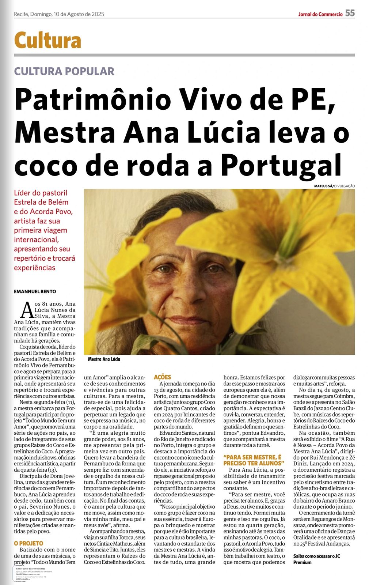
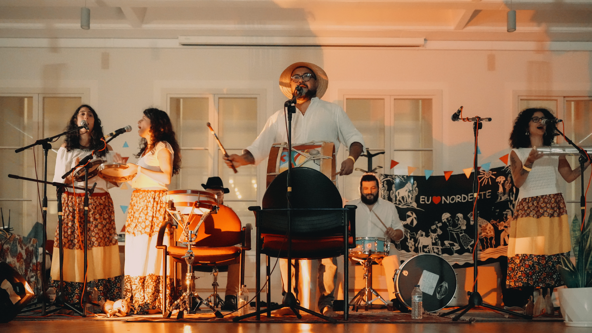
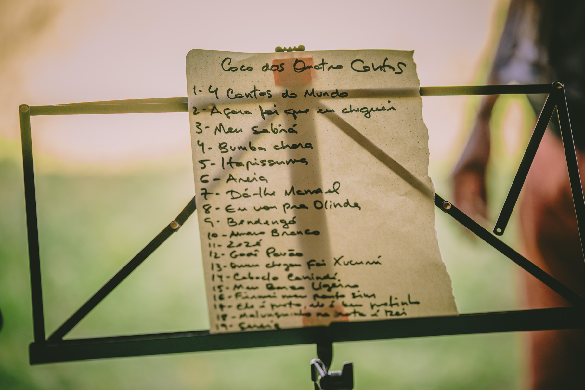
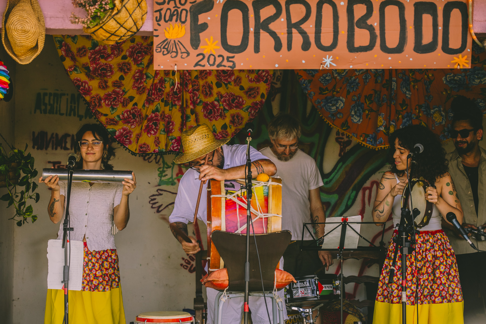
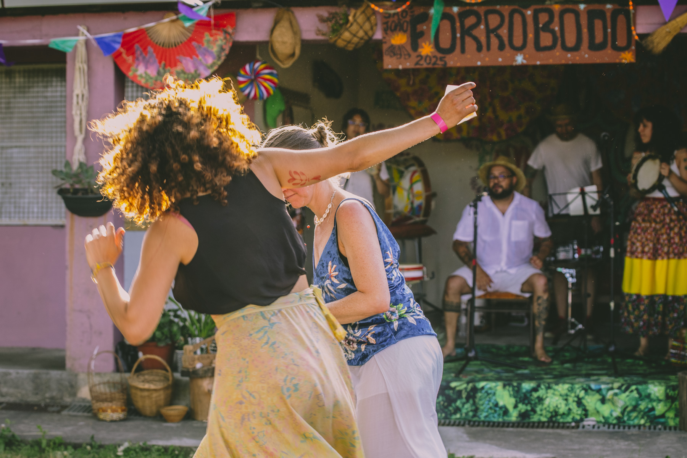
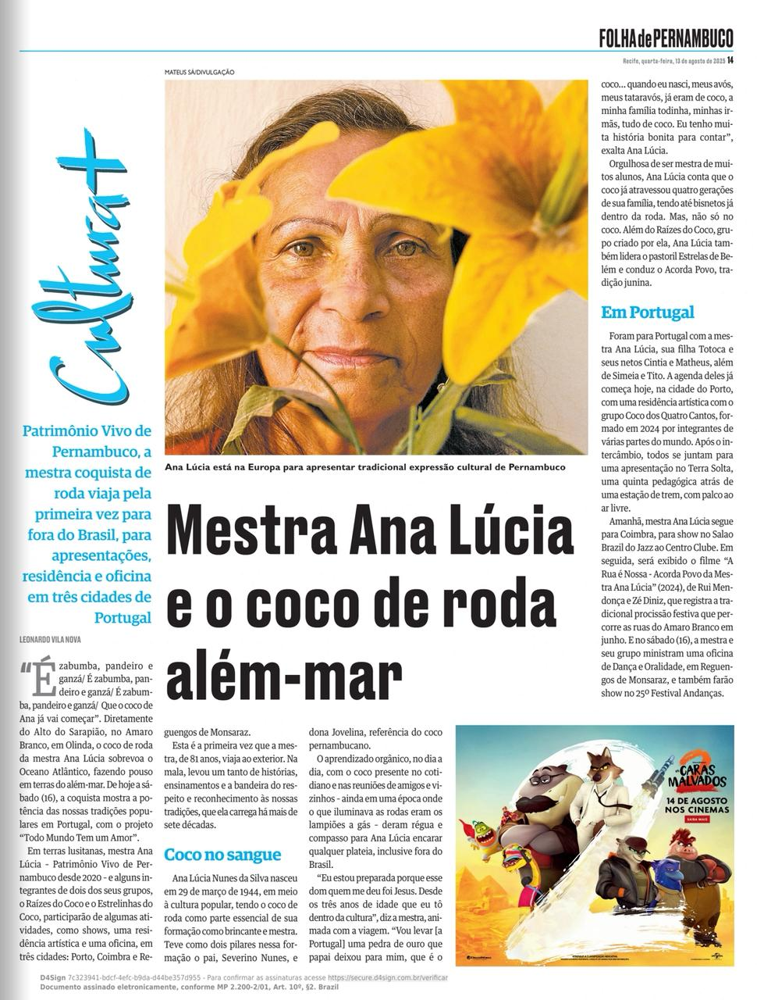
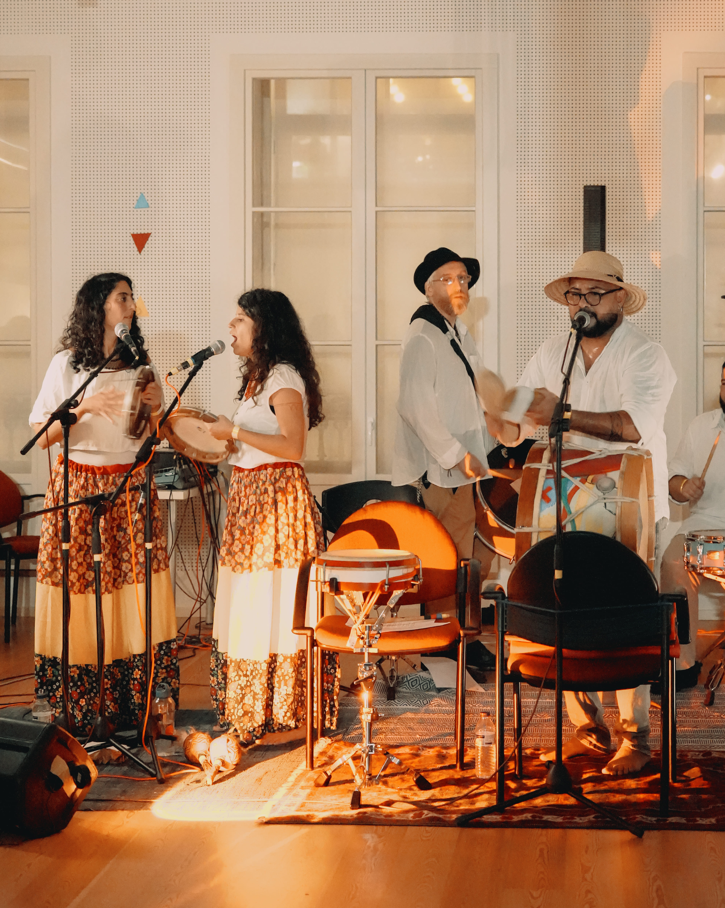

Coco dos
Quatro Cantos
Grupo multicultural de Coco de Roda formado em 2024 no Porto (Portugal), por brincantes de diferentes origens.

Sobre o grupo
História e missão
O Coco dos Quatro Cantos é um grupo multicultural de Coco de Roda formado em 2024 na cidade do Porto, Portugal, por brincantes de diferentes origens: Brasil, Portugal e Jerusalém.
O grupo surge da necessidade de difundir a riqueza cultural brasileira. Nossa missão é valorizar e compartilhar, com cuidado e profundo respeito, as tradições, mestres e mestras que mantêm vivo o patrimônio imaterial do Brasil.
Através do coco buscamos revelar a beleza da diversidade que compõe a cultura nordestina.
Constituído por brincantes vindos de diferentes partes do mundo, o grupo cria um espaço de encontro intercultural, onde a tradição se renova sem perder suas raízes.



O que é
Coco de Roda
O Coco de Roda é uma manifestação popular do Nordeste do Brasil que une música, dança em roda, percussão e canto responsorial (chamada e resposta). A roda é coletiva: o coro sustenta o ritmo e, no centro, brincantes entram para dançar, improvisar e trocar energia com quem toca e canta.
- Como se dança: em roda, com passos marcados, ginga e entradas no centro.
- Instrumentos comuns: zabumba, caixa, pandeiro, ganzá/maracá (e variações).
- Origens e estilos: tradição do Nordeste Brasileiro, com vários sotaques locais e formas de brincar.
Quem somos
Brincantes
Eventos & clipping
Apresentações e oficinas
Imprensa
Na mídia
Matérias sobre a primeira turnê da Mestra Ana Lúcia em Portugal, da qual o Coco dos Quatro Cantos participou na produção de sua apresentação na cidade do do Porto.
Ela foi realizada pela Buruçu Produções e ruipontocom com apoio do Governo do Estado de Pernambuco, Secretaria de Cultura de Pernambuco e Fundarpe.

Mestra Ana Lúcia leva as tradições do coco a Portugal com o projeto “Todo o Mundo Tem um Amor”
Contactos
Vamos fazer uma roda?

@cocoquatrocantos